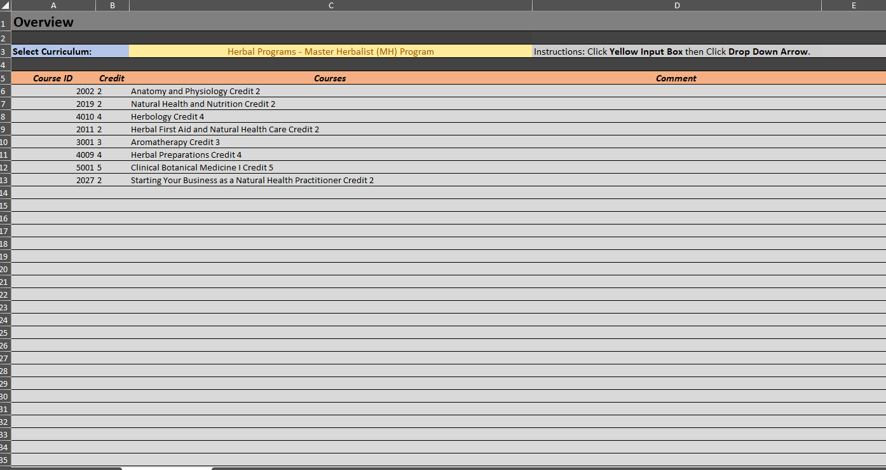
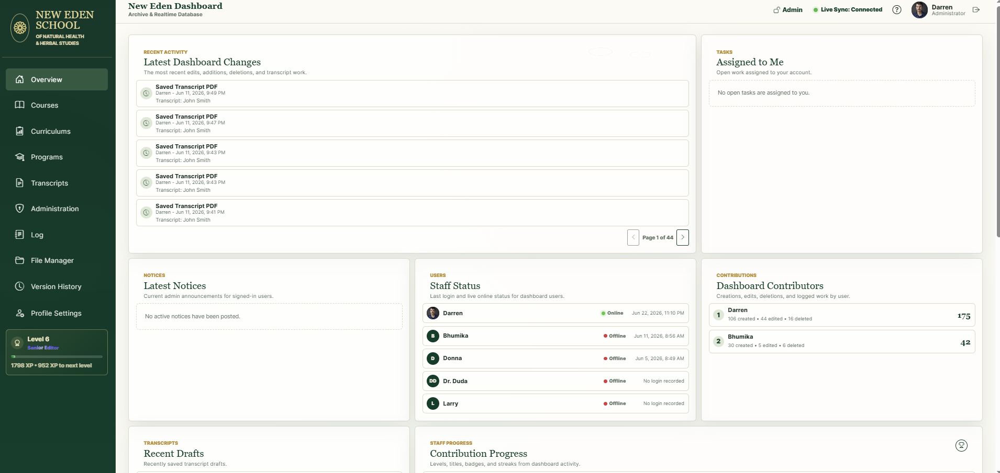

Before
Curriculum and course information organized through spreadsheets and separate files.
Educational operations case study
An in-development educational operations ecosystem centralizing records, curriculum, transcripts, files, communication, tasks, system health, and administration.

Project evolution
New Eden began as a course and curriculum archive and has evolved into a modular platform for educational operations. It reduces disconnected workflows, supports staff collaboration, improves record organization, and creates a scalable environment for maintaining institutional information.

Curriculum and course information organized through spreadsheets and separate files.
A shared real-time platform joining records, workflows, files, users, reporting, and maintenance.
My role
I serve as project lead, product owner, UX planner, workflow designer, tester, and implementation coordinator. I define the platform vision, plan features, structure navigation and Firebase relationships, test workflows, review logic, maintain the roadmap, and direct continued development.
AI-assisted tools accelerate prototyping, debugging, interface planning, and documentation, while product vision, requirements, testing, quality control, deployment decisions, and long-term direction remain human-led.
Platform structure
Latest changes, assigned tasks, notices, staff status, contributors, transcript drafts, progress, health, and items needing review.
Searchable, sortable course records with validation, duplicate prevention, filters, pagination, and protected admin controls.
Versioned curriculum requirements tied to master courses and organized under broader educational program structures.
Student details, curriculum imports, grade calculations, GPA, credit totals, drafts, PDF creation, validation, and storage workflows.
A central Firebase Storage repository linking documents to course IDs so files remain reusable and maintainable.
File selection, curriculum filtering, shared templates, delivery tracking, test messages, and Cloud Function-ready sending.
Backups, health checks, announcements, tasks, maintenance tools, email workflows, and application settings.
Searchable accountability records and a development timeline documenting releases and feature evolution.
Course-ID validation, duplicate and unlinked files, empty curriculums, transcript checks, failed email diagnostics, and cleanup tools.
User preferences, profile images, dark mode, landing-page settings, live presence, and separated admin and viewer capabilities.
XP, levels, ranks, achievements, badges, streaks, contributor totals, and progress summaries encourage archive maintenance.
Visibility into Realtime Database, Storage, Cloud Functions, email service, authentication, environments, and CORS origins.
Technology
Experience design
The interface uses forest green, cream, sage, gold, and botanical styling with sidebar navigation, a sticky utility bar, dashboard cards, searchable tables, status badges, modals, toast notifications, profile cards, dark mode, responsive layouts, and clear admin-only controls.
Usability decisions include semantic navigation, explicit labels, required-field indicators, field-level validation, disabled incomplete actions, destructive-action confirmations, keyboard-friendly forms, visible statuses, and useful empty states.
Current status
Working modules already cover a broad administrative scope. Planned refinement includes workflow automation, secure email completion, external backups, transcript improvements, expanded reporting, deeper role controls, stronger data-cleanup tools, CRM-style functionality, and improved user documentation.
Why it matters
New Eden reduces dependence on spreadsheets, shared folders, manual transcript templates, repeated uploads, informal task tracking, untracked edits, and disconnected curriculum records. It improves data consistency, transcript speed, file organization, accountability, communication, maintenance, transparency, and long-term scalability.
The project demonstrates product ownership, workflow analysis, educational operations, Firebase architecture, authentication, real-time synchronization, cloud storage, transcript generation, administration tools, UX/UI design, validation, activity logging, and responsible AI-assisted development.